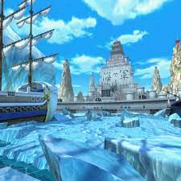
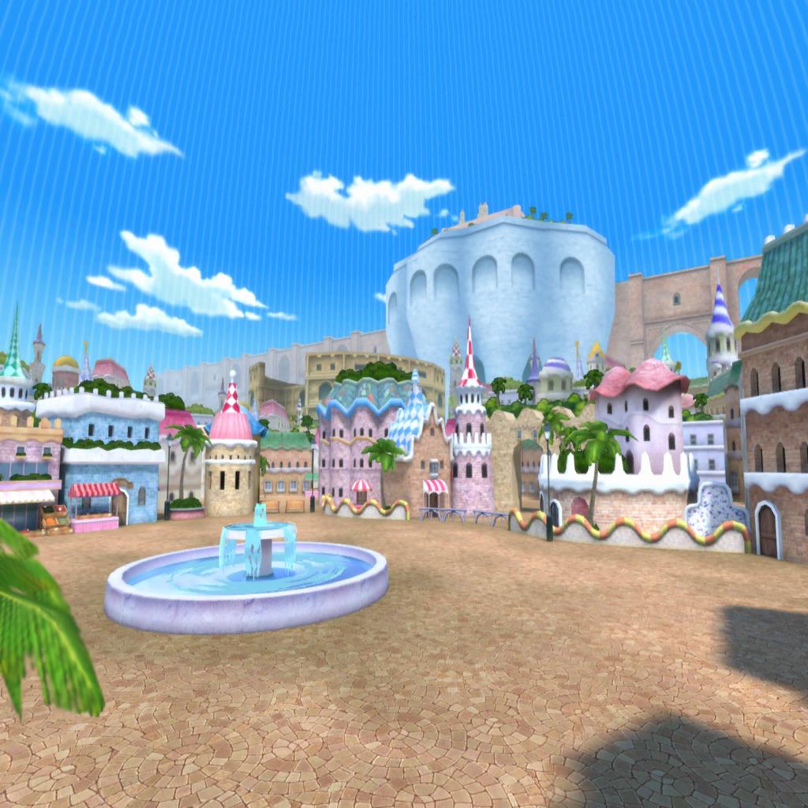
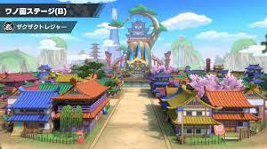
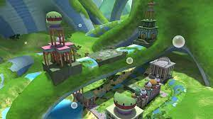

Home | Characters | Maps | Information | Feedback & Support Us |

Salah satu map favorit player karna mudah dan tempat paling emosional bagi penggemar one piece.

Ini uga Salah satu map paling enak menurut saya karna map ini tidak banyak rute dan tempat ini adalah tempat Pertarungan paling epic.

onigashima adalah tempat yg baru saja di kunjungi oleh bajak laut topi jerami dan disana ada pertempuran yg paling epic dan emosional antara Luffy melawan Kaido dan samurai melawan Bajak laut Kaido.

Tempat ini adalah pertemuan antara Luffy dengan teman lamanya yg permata kali bertemu di impeldown yg bernama Jimbe dan mengajaknya sebagai Salah satu anggotanya.

Salah satu tempat yg menurutku paling sedih karna mereka bertemu dengan laksamana kizaru yg membuat kelompok luffy melarikan diri dan pada akhirnya mereka semua terpisah selama 2 tahun karna di selamat kan oleh anggota revolusioner bernama kuma.